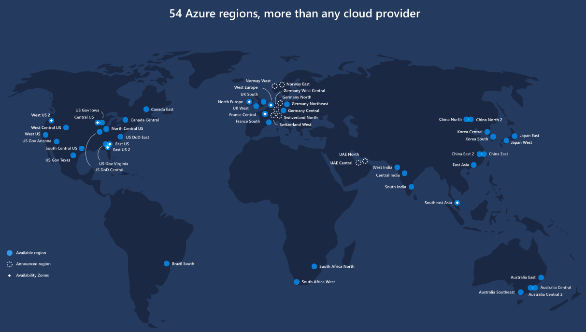

Where is the location data for this map from?
The following Azure CLI command was used to retrieve the Latitude / Longitude coordinates of each of the Microsoft Azure "Public Cloud" Regions (aka Locations):
## Azure CLI 1.0
azure location list --json > azure_regions.json
## Azure CLI 2.0
az account list-locations > azure_regions.json
This Azure CLI command will output a JSON file containing the Azure Region data. This JSON file is pulled directly into this app for display.
Additional data has been hand compiled / generated to include non-Public Cloud data center regions / locations, such as Germany, China, and the US Gov / DoD as well.
All geocode locations for Azure Regions are estimates. They do not represent the actual physical location of a specific datacenter.
How many Azure Regions are there?
Currently, Azure is available in
54 regions around the world.

This map image is from Microsoft. Follow the link to see it in full.
How accurate are the points / geocodes?
The accuracy is basically to the general geographic region where the Azure Regions are located. Microsoft doesn't disclose the actual location or street address of the physical datacenters for security reasons. Much of the data on this map is taken directly from the geocode that Microsoft publishes for the datacenters. Other data (such as Germany, China, and US Gov / DoD) just point to the City or Region that Microsoft has indicated the region is in.